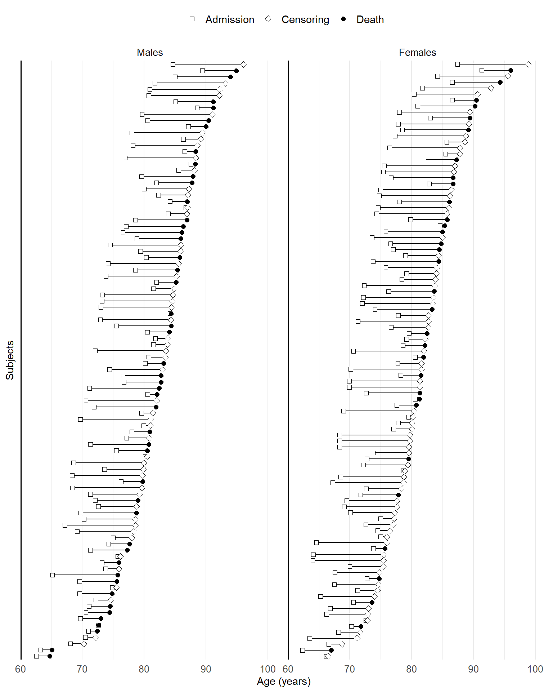

Chapter 7 - Left Truncation and Interval Censoring
Slides
Lecture slides here. (To convert html to pdf, press E \(\to\) Print \(\to\) Destination: Save to pdf)
R code
Show the code
################################################################################ Chapter 7 R Code## This script reproduces all major numerical results in Chapter 7, including:# 1. Analysis of left-truncated data (Channing House Study)# 2. Analysis of interval-censored data (BMA HIV Study)################################################################################==============================================================================# (A) Channing House Study (Left-Truncated Data)#==============================================================================library(survival)library(tidyverse)library(patchwork)#------------------------------------------------------------------------------# 1. Read and Inspect the Channing Data#------------------------------------------------------------------------------channing <-read.table("Data\\Channing House Study\\channing.txt")head(channing)# Convert gender to factorchanning$gender <-factor(channing$gender)#------------------------------------------------------------------------------# 2. Cox Model with Left-Truncation#------------------------------------------------------------------------------obj <-coxph(Surv(Entry.Age, End.Age, status) ~ gender, data = channing)summary(obj)#------------------------------------------------------------------------------# 3. Test Proportional Hazards Assumption (Schoenfeld Residuals)#------------------------------------------------------------------------------obj_zph <-cox.zph(obj)obj_zph# Plot the rescaled residualsplot( obj_zph,ylab ="Gender",xlab ="Age (years)",lwd =2)#------------------------------------------------------------------------------# 4. Number at Risk by Gender Over Age#------------------------------------------------------------------------------# Create a function to compute number at risk at each time pointt <-seq(60, 100, by =1)n_risk_t <-function(entry, end) { m <-length(t) n_j <-numeric(m)for (j inseq_len(m)) { n_j[j] <-sum(entry <= t[j] & t[j] <= end) }return(n_j)}# Compute n at risk by gendernrisk <- channing %>%group_by(gender) %>%reframe(n_j =n_risk_t(Entry.Age, End.Age)) %>%add_column(t =rep(t, 2), .before =1) %>%mutate(gender =if_else(gender ==1, "Male", "Female"))# Plot number at risknrisk_fig <- nrisk %>%ggplot(aes(x = t, y = n_j)) +geom_step(aes(linetype = gender)) +theme_bw() +labs(x ="Age (years)",y ="Number at risk" ) +theme(legend.title =element_blank(),legend.position ="top" )#------------------------------------------------------------------------------# 5. Conditional Survival Functions Given Age 70#------------------------------------------------------------------------------t0 <-70beta <- obj$coefficientsLambda0 <-basehaz(obj, centered =FALSE)# Subset baseline hazard for times >= t0Lambda0t0 <- Lambda0[Lambda0$time >= t0, ]# Re-center the hazard to start at 0 for t >= t0Lambda0t0$hazard <- Lambda0t0$hazard - Lambda0t0$hazard[1]# Construct survival curves for "Male" (reference) and "Female"surv_t0 <- Lambda0t0 %>%mutate(St =exp(-hazard),gender ="Male" ) %>%add_row( Lambda0t0 %>%mutate(St =exp(-hazard *exp(beta)),gender ="Female" ) )# Plot conditional survival functionssurv_fig <- surv_t0 %>%ggplot(aes(x = time, y = St)) +geom_step(aes(linetype = gender)) +theme_bw() +labs(x ="Age (years)",y ="Conditional survival probabilities" ) +theme(legend.title =element_blank(),legend.position ="top" ) +scale_x_continuous(expand =expansion(c(0, 0.05)))# Combine number-at-risk and conditional-survival plotschan_model <- nrisk_fig + surv_fig +plot_layout(ncol =2, guides ="collect") &theme(legend.position ='top')chan_model# Uncomment to save the figure:# ggsave("trunc_chan_model.pdf", chan_model, width = 8, height = 4)# ggsave("trunc_chan_model.eps", chan_model, width = 8, height = 4)#==============================================================================# (B) Bangkok Metropolitan Administration (BMA) HIV Study (Interval-Censored)#==============================================================================# devtools::install_github("lmaowisc/IntCens")library(IntCens)#------------------------------------------------------------------------------# 1. Read BMA HIV Study Data#------------------------------------------------------------------------------df <-read.table("Data//Bangkok Metropolitan Administration HIV_AIDS Study//bam.txt")df#------------------------------------------------------------------------------# 2. Fit Proportional Hazards Model for Interval-Censored Data#------------------------------------------------------------------------------PH_fit <-icsurvfit(L = df$L, # left endpoint of intervalR = df$R, # right endpoint of intervalZ = df[, 3:7], # covariatesmodel ="PH")PH_fit#------------------------------------------------------------------------------# 3. Construct Table 7.3: Hazard Ratio & 95% CI#------------------------------------------------------------------------------beta <- PH_fit$betase <-sqrt(diag(PH_fit$var))c1 <-round(exp(beta), 2)c2 <-paste0("(",round(exp(beta -1.96* se), 2),", ",round(exp(beta +1.96* se), 2),")")noquote(cbind(c1, c2))#------------------------------------------------------------------------------# 4. Predict HIV Sero-Negative Probabilities#------------------------------------------------------------------------------par(mfrow =c(1, 1))age.med <-median(df[, "age"])# Plot for a median-aged male IDU (sex=1) with no needle sharing or drug injection in jailplot( PH_fit,z =c(age.med, 1, 0, 0, 0),xlim =c(0, 50),lty =2,xlab ="Time (months)",ylab ="HIV sero-negative probabilities",lwd =2,main ="")plot( PH_fit,z =c(age.med, 1, 0, 1, 0),xlim =c(0, 50),add =TRUE,lwd =2)legend("bottomleft",lty =c(2, 1),legend =c("No history of imprisonment", "History of imprisonment"),lwd =2)
Follow-up Plots
Visualization of subject-level follow-up under left truncation or interval censoring must account for the nonzero entry time or the imprecise location of the endpoint. This makes it different from right-censored data. To show the additional information, we need additional features on the plot.
Under left truncation
For each subject, we use a line segment to represent the period \([T_{Li}, X_i]\) on study, at the end of which the outcome event is distinguished from censoring by point shape.
The following is an example using the Channing House study.
library(tidyverse)# read in the Channing study datachanning <-read.table("Data\\Channing House Study\\channing.txt")# head(channing)# take a random sample of 100 femalesset.seed(2024)channing_f_sub <- channing |>filter(gender ==2) |>sample_n(100)# take all maleschanning_m_sub <- channing |>filter(gender ==1) # combine the sub-sampleschanning_sub <- channing_f_sub |>add_row(channing_m_sub)n <-nrow(channing_sub) # number of subjects in the sub-sample# panel labellergender_labeller <-c("1"="Males", "2"="Females")# follow -up plotchan_fig <- channing_sub |>add_column(ID =1: n) |># add an ID column as y-axisggplot(aes(y =reorder(ID, End.Age))) +# order subject ID shown on y-axis by end timegeom_linerange(aes(xmin = Entry.Age, xmax = End.Age)) +# line range (T_L, X)geom_point(aes(x = Entry.Age, shape ="2"), fill ="white", size =2) +# entry point (2)geom_point(aes(x = End.Age, shape =factor(status)), fill ="white", size =2) +# endpoint (1: event; 0: censoring)geom_vline(xintercept =60, linewidth =1) +# start line at age 60facet_wrap(~ gender, ncol =2, scales ="free", # by genderlabeller =labeller(gender = gender_labeller)) +theme_minimal() +scale_y_discrete(name ="Subjects") +scale_x_continuous(name ="Age (years)", limits =c(60, 100), breaks =seq(60, 100, by =10), expand =expansion(c(0, 0.05))) +scale_shape_manual(limits =c("2", "0", "1"), values =c(22, 23, 19), labels =c("Admission", "Censoring", "Death")) +# set the point shapestheme( # theme formattinglegend.position ="top",legend.title =element_blank(),axis.text.y =element_blank(),axis.ticks.y =element_blank(),panel.grid.major.y =element_blank(),legend.text =element_text(size =11),axis.title =element_text(size =11),axis.text =element_text(size =10),strip.text =element_text(size =10) )chan_fig# ggsave("trunc_chan_fig.pdf", chan_fig, width = 8, height = 9)# ggsave("trunc_chan_fig.eps", chan_fig, width = 8, height = 9)

Figure 1: Follow-up plots for a random sample of 100 residents for each gender in the Channing House study. Males appear to suffer more deaths than females.
Under interval censoring
For each subject, we use a gray line to represent the follow-up period. The check-up times can be marked on it by dots if such data are available. The event-containing interval \([L_i, R_i]\) (\(R_i<\infty\)) is highlighted from the rest of the follow-up period using a black line segment.
The following is an example using the Bangkok Metropolitan Administration HIV study.
library(IntCens)## BMA HIV study## Bangkok Metropolitan Administration HIV Studybma <-read.table("Data//Bangkok Metropolitan Administration HIV_AIDS Study//bam.txt")# sample sizen <-nrow(bma)# create L and Rbma_lr <- bma |>mutate(ID =1: n, .before =1 )# take a random sample of 150 subjects per imprisonment statusset.seed(2024229)bma_lr_jail_sub <- bma_lr |>filter(jail ==1) |>sample_n(150) bma_lr_nojail_sub <- bma_lr |>filter(jail ==0) |>sample_n(150) ## combine the sub-samplesbma_lr_sub <- bma_lr_jail_sub |>add_row(bma_lr_nojail_sub) |>mutate(end =ifelse(R ==Inf, L, R),status = (R <Inf) +0# an indicator of event occurence vs right censoring )# panel labellerjail_labeller <-c("0"="No imprisonment", "1"="Imprisonment")# follow -up plotbma_fig <- bma_lr_sub |>ggplot(aes(y =reorder(factor(ID), end))) +# order subjects by R or last check-upgeom_linerange(aes(xmin =0, xmax = L), alpha =0.3) +# gray line for non-event-containing periodgeom_linerange(data = bma_lr_sub |>filter(status ==1), aes(xmin = L, xmax = R), linetype =1) +# black line for event-containing intervalgeom_point(data = bma_lr_sub |>filter(status ==1), aes(x = L, shape ="1"), size =2) +geom_point(data = bma_lr_sub |>filter(status ==1), aes(x = R, shape ="1"), size =2) +geom_point(data = bma_lr_sub |>filter(status ==0), aes(x = L, shape ="0"), fill ="white", size =2) +# different point shapesgeom_vline(xintercept =0) +facet_wrap(~ jail, scales ="free", labeller =labeller(jail = jail_labeller)) +# by imprisonment statustheme_minimal() +scale_y_discrete(name ="Subjects") +scale_x_continuous(name ="Time (months)", breaks =seq(0, 48, by =6), expand =expansion(c(0, 0.05))) +scale_shape_manual(limits =c("0", "1"), values =c(23, 19), labels =c("Right censoring", "L-R containing seroconversion")) +# set point shapestheme( # theme formattinglegend.position ="top",legend.title =element_blank(),axis.text.y =element_blank(),axis.ticks.y =element_blank(),panel.grid.major.y =element_blank(),legend.text =element_text(size =11),axis.title =element_text(size =11),axis.text =element_text(size =10),strip.text =element_text(size =10) )bma_fig# ggsave("trunc_bma_fig.pdf", bma_fig, width = 8, height = 12)# ggsave("trunc_bma_fig.eps", bma_fig, width = 8, height = 12, device = cairo_pdf)
Figure 2: Follow-up plots for a random sample of 150 intravenous drug users by imprisonment history in the Bangkok Metropolitan Administration study. Those who have been imprisoned before appear more likely to experience sero-conversion.